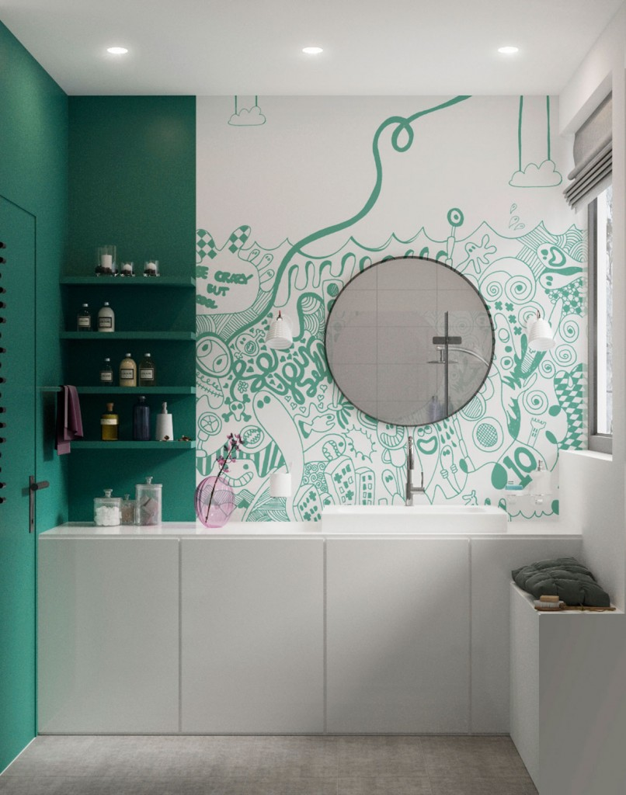
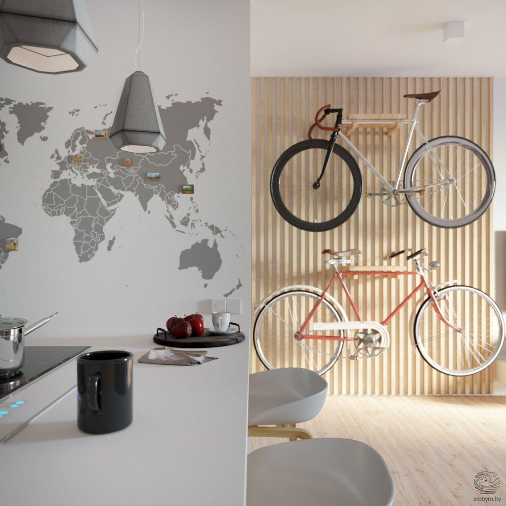
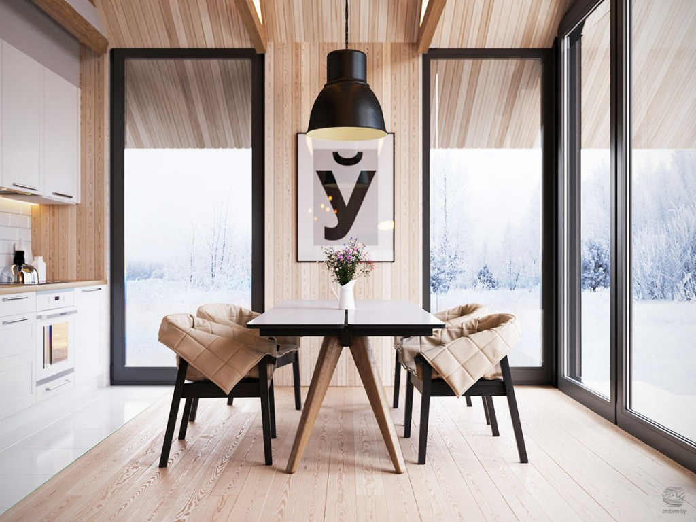

Каким видят свой дом современные белорусы?
Продолжая новую рубрику журнала «Мастерская. Строим дом», наша редакция заинтересовалась концептуальным вопросом – что же сейчас выбирают и чего хотят белорусы? Что популярно, востребовано и актуально: как в выборе проекта своего дома, так и в дизайне интерьера. Естественно, ответить на этот вопрос нам могли лишь настоящие мастера своего дела – молодые, талантливые и современные архитекторы из студии ZROBYM architects: Алексей Кораблев и Андрусь Bezdar.
– Ребята, добрый день! Кому как ни вам предлагать заказчикам нестандартные идеи и решения, ведь вы настоящие генераторы популярных проектов. И, тем не менее, первый вопрос, который сейчас принято задавать: как кризис сказался на вашей работе? Что можете сказать про изменения в системе «спроса-предложения»? Все хотят построить дом «как можно дешевле»?
– Вовсе нет. Понимаете, если человек задумался о строительстве дома и, более того, собрал необходимую по его меркам сумму, то кризис ему погоды не сделает. И экономить в этой ситуации никто точно не желает: дом ведь мы хотим строить «на века», а выберешь халтуру – потом менять ее, возможно, денег не соберешь уже. К тому же, сейчас самое подходящее время для того, чтобы строить и строиться – цены на строительные материалы сильно просели. Так что заказчики наши, как правило, остаются в выигрыше. Конечно, в нынешней ситуации сложнее собрать необходимую сумму, но, как вы сами понимаете, пока в отношении спроса мы этого почувствовать точно не можем. Последствия сегодняшних сложностей мы сможем увидеть лишь через пару лет. Но, конечно, надеемся на лучшее.
– Расскажите, а что за последние пару лет менялось в представлениях белорусов об идеальном пространстве? Какие тенденции (если они, конечно же, вообще есть) можно выделить с точки зрения выбора проекта дома, что сейчас востребовано?
– Да, представления белорусов о «пространстве для жизни» менялись за эти годы и достаточно сильно. Когда мы только приходили на рынок, был очень популярен архитектор Бородин с его концепцией «бюджетного дома». Сейчас люди скорее более благоволят к какой-то европейской архитектуре и, на наш взгляд, больше стремятся к красоте.
– Но, Алексей, нельзя сказать, что архитектура Бородина некрасивая. Она своеобразная, и мне, к примеру, она вполне импонирует. Просто есть еще множество других решений и стилей для загородных домов: уход в минимализм, более авангардные и смелые решения. У Бородина же все дома похожие: их мотивы перекликаются: крыша скатная и обязательно с большими свесами. Большинство его домов одноэтажные. В отделке это, как правило, штукатурка. Людям нравилась утилитарность и экономичность этих домов. При этом Бородин был в чем-то неподражаем: за своем веку он построил 200 домов. По белорусским меркам – это настоящий период в архитектуре. После него на какое-то время стали очень популярными польские проекты домов. Сейчас, на мой взгляд, тенденции повернулись к индивидуальному проектированию. И еще очень много людей сейчас заказывают дом с прямой крышей без скатов либо со скатами, переходящими сразу в стену без свесов. Получается, если нарисовать последовательность популярных проектов, видится это так: замки – Бородин – польские проекты – дома с идеей и индивидуальностью.
– Давайте проясним для наших читателей: что можно понимать под идеей, как это реализуется в конкретном проекте?
– Смотрите: к примеру, сейчас мы проектируем POLYGONAL HOUSE – этот дом снаружи выглядит вполне обычно, но внутри мы использовали ломаную геометрию, там почти не будет углов под 90 градусов и больших параллельных плоскостей.
– А я еще хотел добавить к перечисленным тенденциям одну мысль: сейчас люди строят исходя из того, что у них есть на участке: красивый вид, рельеф, геометрия. Они уже не идут за типовым проектом, а стараются органично вписать свое жилище в существующий ландшафт, правильно сориентировать его по сторонам света и получать выгоды от индивидуального подхода в проектировании.
– Давайте продолжим разговор о концептуальности и идейности. Скажите, белорусские мотивы (в том или ином проявлении) пользуются сегодня популярностью?
– Если говорить о национальном колорите, это вовсе не значит, что мы поставим в доме пенек в место журнального столика или будем обязательно использовать для строительства сруб. Скорее, мы можем говорить о некой интерпретации национальных мотивов в современной обработке. У белорусов сейчас есть интерес к своим корням и истории, но я бы не стал утверждать, что это локальная тенденция – нет, такие веяния сейчас актуальны и в европейской архитектуре.
– Если говорить о примерах, Алексей сейчас проектирует дом со внутренним двором. Исторически в верхней Беларуси наши предки очень часто строили дома с атриумом внутри. Национальные особенности можно найти во многих мелочах: в форме крыши или расположению окон дома по сторонам света (для белорусов – с южной стороны).
– Я бы еще добавил, что белорусское строительство – это всегда минимализм. Простые геометрические узоры в исполнении, в дереве, это всегда аскетичность. И если мы хотим построить дом по-белорусски, то должны это учитывать.
– Аскетичность характерна не только для белорусов, а для всех северных народов. И чем севернее – тем аскетичнее. Также для белорусской архитектуры характерно применение дерева, ведь 80% территории нашей страны занимают леса. Но, конечно, использование дерева так же требует переосмысления. Сегодня это уже не классический сруб, а, к примеру, дом, обшитый тонкой рейкой или использование деревянного каркаса. Из классического оцилиндрованного сруба, конечно, тоже можно делать очень интересные вещи. Для примера, у Кузембаева есть дом из сруба, выполненный в стиле конструктивизм главной идеей которого был отсылка к катамарану.
– Давайте с вами вместе порассуждаем еще на такую тему: почему одни компании выживают на современном рынке белорусской архитектуры, а другие – нет?
– Выживают сегодня те, кто умеет быстро адаптироваться к изменяющимся реалиям. Те, кто строили в 90-ые замки, не мог бы найти клиентуру сегодня, ведь это пережитки прошлого. Архитектор должен расти вместе с тем, как меняется общество, идти вперед, учиться на достойных примерах и развиваться. Важно привносить в каждую работу собственные идеи и концепции, внимать тенденциям, которые происходят в мире. Нужно следить за мировыми трендами и проектировать, опираясь на них, постоянно создавая что-то новое.
– Насколько в целом долговечны тренды?
– Совершенно недолговечны. Максимум год-два.
– А если поговорить про тенденции в дизайне интерьера дома: как меняются предпочтения?
– Сейчас особенно актуален скандинавский дизайн, который по менталитету очень подходит белорусам. Он пришел из северных стран, и ему свойственна привычная и любимая для белоруса простота. Единственное, его нельзя копировать один в один, непременно нужно привносить что-то от белорусского духа. Не диван «Пинскдрев», конечно, а переосмысление национальной стилистики.
– Я бы еще отметил, что в скандинавском дизайне есть еще одна особенность, у которой есть свое историческое обоснование: в связи с тем, что техническая революция дошла в эти страны позже, практически до недавнего времени у скандинавов были развиты ремеслиничества: было множество мастеров, работающих с деревом. В Беларуси, на самом деле, развивалась похожая ситуация, с одной разницей – у наших предков было принято создавать деревянные подделки руками. Именно такой белорусский хендмейд мы можем использовать в современных интерьерах в качестве акцента.
– Мне еще с начала нашего разговора интересно: а почему для народов северных характерен минимализм (как вы ранее говорили)?
– В наших странах более холодно и серо, люди более суровые, которые любят простую лаконичную архитектуру без вычурностей. В южных мусульманских странах, наоборот, домики могут быть выкрашены полностью голубым цветом или иметь разноцветные узоры. У нас такого не встретишь. С другой стороны, скандинавский графический дизайн – он самый яркий в мире. И яркие пятна в интерьере – еще одна особенность скандинавского дизайна.
– Дизайн интерьера дома и квартиры: в чем глобальные отличия?
– В дизайне дома намного больше возможностей. Можно работать с большими пространствами, придумывать разноплановое освещение, использовать большие размеры окон с красивыми видами и т.п. А квартирах человек старается по максимуму использовать пространство, наполняя его максимальной функциональностью, по этому о масштабности и больших возможностях тут говорить приходиться реже. В доме совершенно другие законы проектирования.
– Еще в доме можно реализовать камин: настоящий, большой, с потрескивающими дровами. От этого и строится остальное окружение, ведь главным становиться каминная зона, а телевизор уходит на второй план Поэтому именно в доме хочется реализовать что-то более натуральное, настоящее и уютное. А для квартиры приемлем все же более технологичный и хайтечный вариант оформления.
– Каких ждать трендов в домостроении в ближайшие 5 лет?
– Поиск национальных традиционных черт. Это сейчас актуально для всех. Также мы ждем изменения в представлениях белорусов в сторону рационализации жилья и уменьшения площади. В Европе дом в 200 «квадратом» считается большим. Также нам кажется, что производство домов станет более механизированным. Все предметы, которые нас окружают сегодня делают машины, кроме домов. А влияние человеческого фактора…. ну вы сами понимаете.
– Нашим читателям было бы еще очень интересно услышать про ваши самые интересные и уникальные проекты.
– Сложно сказать, какие проекты можно выделить как самые уникальные. Из текущих интересна для нас реализация автомобильного салона Мазератти. Пока что объект находиться на стадии ремонтных работ. В этом проекте мы работали вместе с итальянскими архитекторами, поскольку у такой значимой марки важно сделать все исходя из корпоративного брендбука и вписаться в общее направление оформление салонов. В тоже время задача сохранить высокое качество реализации проекта из качественных материалов для нас сохраняется как основная.
Еще одним интересным проектом для нас стала квартира на последнем этаже нового дома. Высокие потолки и большие площади позволяют посмотреть на помещение в совершенно другом виде. Кроме того, нельзя не отметить слаженную работу с заказчиком. Приятно работать с прогрессивными и смелыми на идеи людьми.


{kind=link}
{kind=link}
{kind=link}